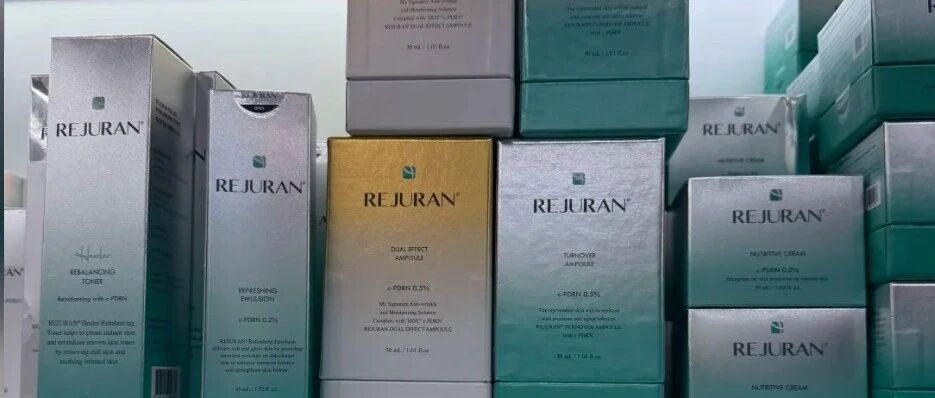

S上美与 PharmaResearch 推进丽驻兰化妆品在华本土化，合作范围覆盖运营与潜在合资
9 月 21 日，上美与韩国 PharmaResearch 签署备忘录，拟推进丽驻兰化妆品在中国的本土化运营，并探索成立合资公司。该合作涉及韩国功效护肤资产在中国市场的品牌、产品和渠道承接，属于跨境品牌以本土经营主体提高落地效率的实质性动作。中国香妆融媒体｜合作报道
信号判断：跨境功效护肤的竞争核心已从单品引进扩展到本地化运营能力。产品注册、定价、医学沟通、渠道选择和长期品牌管理需要在合作开始时同步划清责任边界；合资讨论能否落地仍需等待各方后续披露。
